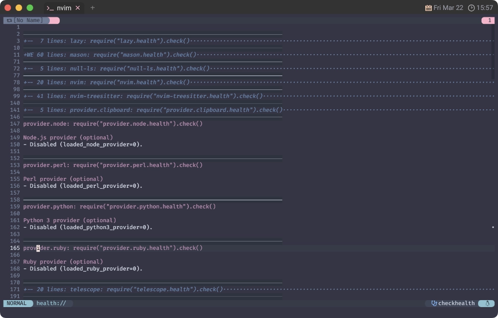

🦸♀️nvim_set_var (Disable the provider)
Deep in the jungle, where the mighty tiger lies
Bill and his elephants were taken by surprise
ジャングルの奥深く、強大な虎が横たわる
ビルと象たちは意表を突かれて おでれぇたぞう
私事ですが、日本各地が爆弾低気圧でわーわーゆーてた頃、北陸旅行を堪能してきました。
贅沢に３泊も❗
すでに持ち金はマイナスだし、徳政令には期待できないしでもうパニックです😵💫
初日は新幹線カードを使ってなんとか金沢までやって来ましたが、 最初の目的地はさらに西の福井なので、ここからは特急カードを使います。
ちょうど「北陸新幹線延伸」と「特急サンダーバード短縮」の節目だったので❗
このサイトに辿り着くような人が "サンダーバード" と聞けば MozillaのThunderbird を思い浮かべるかもしれません。
しかし、ここで言っているのは West Japan Railway Companyのサンダーバードです。
So Captain Marvel zapped him right between the eyes
そこに現れた Captain Marvel 虎の眉間にズバッと一撃
"サンダー" というぐらいなんで悪天候に強いのかと思いきや、 強風には弱いそうなので、どちらかといえば "バード" 成分の方が多めな気がします🐦
爆弾低気圧なんて天敵でしょうね😿 この日も琵琶湖をぐるっと迂回して走っていたとかいないとか。
ゆーてわたしもハートウォーミングでやらせてもろ〜てますんで「琵琶湖の風とめたろかぁ😊」 ゆーわけです。
...まあ、実際頼まれても「そんな神通力なかったわぁ❗」ゆーて、すっとぼけますけどね🙄
Mozilla とは関係ないけどいいじゃない🦖 とってもハートウォーミング🥰
後ろにある真新しい新幹線ホームにはまだ人がいないので、この辺の地理をよく知らない人間からすると
「ん❓まだ福井来てなかったの😑❓」ってなるんですけど。
だって、長野から延伸した時の CMソングはいかにも福井まで行ける感じで歌ってたじゃん🚄
All the children sing
子供たちはみな歌う
と〜や ま いっしか〜わ ふっくい 🎶
「えぇ...😨」ってなるんですけど...❗
まあでも伸びたんなら、もはやどうでもいい❗
住民は 大歓迎ですぞ！
🦸 nvim_set_var
nvim_set_var({name}, {value})
Sets a global (g:) variable.
Parameters: ~
• {name} Variable name
• {value} Variable value
nvim_set_varこと Captain MarvelはShazamとも
Supermanとも
スッパマンさん
ともまた違った魅力があるのです❗かぁっくいー❤️
nvim_set_varはglobal変数に対して値をセットする汎用的なAPIなので、この節での使い方はあくまでも一例です。
このサイトで示している他の使い方としては mapleaderやmaplocalleaderなどがあります。
ぶっちゃけ、このあと出てくるヘルプの文面は少し古く感じられるので、
今となっては特段効果のあるTipsではないかもしれません。
ただ、トリはずっと前からこれって決めてたんで、このままいっちゃいます😅
The children asked him if to kill was not a sin
"Not when he looked so fierce," his mummy butted in
子供たちは彼に尋ねた 「殺すことは罪ではないの？」
"相手が獰猛に見えた場合は罪になりません" と彼のママが口を挟んだ
"If looks could kill, it would have been us instead of him"
"だってもう見た目からして、虎ではなく私たちが殺されていたでしょう"
💫 init.lua
このページで示すサンプルコードはトップのinit.luaに入れるのがいいんじゃないかな〜って思います 🐅
vim.loader.enable()
--
-- 今回示すコードは、ここに入れていくといいかも〜??
--
require 'options'
require 'appearance'
require 'keybinds'
一人でずっとわーわーゆーとりますが、いよいよこのサイトで扱うNeovim最後の節です❗
All the children sing
子供たちはみな歌う
Hey, Bungalow Bill
What did you kill, Bungalow Bill?
おーい Bungalow bill
何を殺したの、Bungalow bill？
📽️ provider
ゆーて前回と同様、そこまで内容がないので、 北陸地方の風景を混ぜつつ、すっとぼけながらゆる〜く締めに向かいます🤪
🐍 Python Integration
東尋坊名前は知ってるけど〜。
東尋坊どこにあるかは知らない〜。
この海には赤マスしかないと思っていた...❗
あれは誇張しすぎた日本海だったということか🤠
Nvim supports Python |remote-plugin|s and the Vim legacy |python3| and
|pythonx| interfaces (which are implemented as remote-plugins).
Note: Only the Vim 7.3 legacy interface is supported, not later features such
as |python-bindeval| (Vim 7.4); use the Nvim API instead. Python 2 is not
supported.
PYTHON QUICKSTART ~
To use Python plugins, you need the "pynvim" module. Run |:checkhealth| to see
if you already have it (some package managers install the module with Nvim
itself).
For Python 3 plugins:
1. Make sure Python 3.4+ is available in your $PATH.
2. Install the module (try "python" if "python3" is missing):
python3 -m pip install --user --upgrade pynvim
The pip `--upgrade` flag ensures that you get the latest version even if
a previous version was already installed.
See also |python-virtualenv|.
Note: The old "neovim" module was renamed to "pynvim".
https://github.com/neovim/neovim/wiki/Following-HEAD#20181118
If you run into problems, uninstall _both_ then install "pynvim" again:
python -m pip uninstall neovim pynvim
python -m pip install --user --upgrade pynvim
だいぶ前にちょっとだけ触れていましたが、
ここで改めてpython3_host_progとloaded_python3_providerを取り上げます。
このサイトで取り上げてきたプラグインやコードに限って言うと、
Pythonは全く使用していないので、その場合は無効化してしまって構いません😏
ここで言う「全く使用していない」は "Neovim本体の動作には使用していない" という意味です。
「Pythonのコードを書くのに使ってるよー」って言うのとは、また別のおはなしです😉
...の、はずです。
🔸python3_host_prog
まず、使用する場合はこれを入れるといいらしいです🐍
PYTHON PROVIDER CONFIGURATION ~
Command to start Python 3 (executable, not directory). Setting this makes
startup faster. Useful for working with virtualenvs. Must be set before any
check for has("python3").
Python 3 を起動するコマンド (ディレクトリではなく実行ファイル)。これを設定すると
起動が速くなります。virtualenv を使うときに便利です。このコマンドは
has("python3") の前に設定する必要があります。
let g:python3_host_prog = '/path/to/python3'
上のサンプルコードをluaで書くとこんな感じになるはずです 🌜
vim.api.nvim_set_var('python3_host_prog', '/path/to/python3')
🔹loaded_python3_provider
で、使用していない場合はこっち 🐍
To disable Python 3 support:
Python 3 のサポートを無効にするには
let g:loaded_python3_provider = 0
と言うことで、こうなります。
これで「わざわざ探しに行かなくていいよー」という意思表示になります。
🏉 Ruby Integration
大量の "とやマネー" をもらってしまった〜の図。
そのネーミングセンスなど、もはやどうでもいい...❗
コーラル社長さんは 持ち金が
マイナスにも めげることなく...
北陸の 応援のためにと
塗炭の苦しみを
乗り越え かけつけてくれました！
その心意気に 富山の
人々が 持ち金を ゼロにするために
走りまわってくれました！
やったね😆
なんかおかげさまで借金も消えたので、あとはもう簡単に載っけていきます❗
無効化するだけであれば全部同じパターンですから😤
Nvim supports Ruby |remote-plugin|s and the Vim legacy |ruby-vim| interface
(which is itself implemented as a Nvim remote-plugin).
RUBY QUICKSTART ~
To use Ruby plugins with Nvim, install the latest "neovim" RubyGem:
gem install neovim
Run |:checkhealth| to see if your system is up-to-date.
🔹loaded_ruby_provider
RUBY PROVIDER CONFIGURATION
To disable Ruby support:
let g:loaded_ruby_provider = 0
🧜♀️ Perl integration
モダンとレトロの富山駅。
東京の都電が車と同じ右折車線に縦に並んでる様も見ていて結構な Chaos っぷりだと思ってるんだけど、 この横並びもなかなかナイスな Chaos and Creation❗
Nvim supports Perl |remote-plugin|s on Unix platforms. Support for polling STDIN
on MS-Windows is currently lacking from all known event loop implementations.
The Vim legacy |perl-vim| interface is also supported (which is itself
implemented as a Nvim remote-plugin).
https://github.com/jacquesg/p5-Neovim-Ext
Note: Only perl versions from 5.22 onward are supported.
PERL QUICKSTART~
To use perl remote-plugins with Nvim, install the "Neovim::Ext" cpan package:
cpanm -n Neovim::Ext
Run |:checkhealth| to see if your system is up-to-date.
🔹loaded_perl_provider
PERL PROVIDER CONFIGURATION~
To disable Perl support:
:let g:loaded_perl_provider = 0
🌳 Node.js Integration
兼六園にはアオサギもやってくるらしいよ。
これがアオサギなのかはよくわかんないですけど😅
Nvim supports Node.js |remote-plugin|s.
https://github.com/neovim/node-client/
NODEJS QUICKSTART~
To use javascript remote-plugins with Nvim, install the "neovim" npm package:
npm install -g neovim
Run |:checkhealth| to see if your system is up-to-date.
🔹loaded_node_provider
NODEJS PROVIDER CONFIGURATION~
To disable Node.js support:
:let g:loaded_node_provider = 0
🩺 checkhealth
そんなこんなで 4つのproviderを取り上げてきたわけですが、
これがちゃんと反映されているかについては、毎度お馴染みcheckhealthで確認できます。

全部無効化した場合であれば、こんな表示になるはずです😉
🧒 Eh up!
富山駅のコンコースに居た時のことなんだけど、ここにはストリートピアノが置いてあって、 どこからか現れた園児たちがそこで歌い始めたんだよね。
All the children sing
子供たちはみな歌う
きがつけば はるのかぜが
あんなにうたっているよ
ありがとう こころをこめてありがとう
そして さよなら
鼻を啜ってるのか、コートに擦ってるのか、 変な音も入っちゃってるけど、もはやどうでもいい...❗
わたしはたまたま居合わせただけなんだけど、やさしい歌をありがとう🤗
最後に、富山駅からちょっと歩くと運河のある風景。
...最終回じゃないぞよ もうちっとだけ続くんじゃ 🐢